Research Project
Multi-View Geometry-Guided Self-Supervised Spacecraft Depth Refinement and Surface Reconstruction
University of Electronic Science and Technology of China
02
Abstract
Reconstructing non-cooperative spacecraft surfaces from close-range fly-around images provides geometry for component inspection, relative navigation, and on-orbit servicing. However, weakly textured regions can make cross-view matching unreliable, resulting in incomplete reconstructed surfaces. Monocular depth estimation and completion provide dense geometry, but cross-view inconsistencies can misalign the reconstructed surface. Therefore, directly fusing these depth maps may introduce outliers, duplicated surfaces, and local surface thickening. To address these problems, we propose a multi-view geometry-guided self-supervised method for spacecraft depth refinement and surface reconstruction. Candidate points are sampled along reference rays around scale-aligned per-view depths, filtered using cross-view depth consistency, effective view support, and viewing directions, and fused into surface seeds through voxel fusion. Their geometry, appearance, and confidence are mapped to 2D Gaussian parameters for structured initialization. The current Gaussian surface then evaluates the compatibility of per-view depth observations: reliable constraints are retained, while incompatible observations are weakened. On MVSPAD, the proposed method achieves average depth MAE, RMSE, and Mesh Chamfer-L1 values of 3.632, 14.769, and 1.849 mm. Compared with 2DGS, MAE and Chamfer-L1 are reduced by 65.7% and 60.5%, respectively.
03
Method
The framework turns independently recovered per-view depth maps into a shared surface through three connected stages. Reliable observations are retained, their local geometry is preserved, and inconsistent evidence is weakened as the surface is optimized.
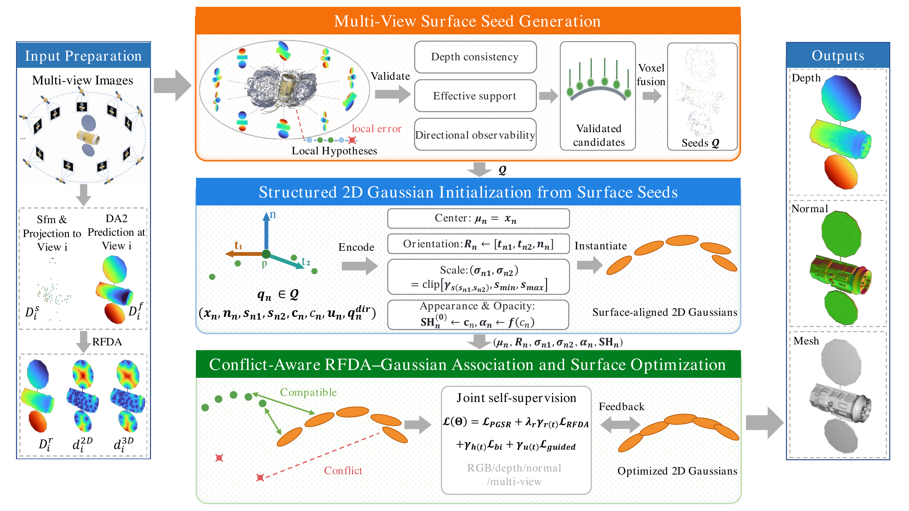
04
Results
Per-view depth recovery
Qualitative comparison
The proposed method reduces local cross-view depth inconsistency near weak textures, thin structures, and depth discontinuities.
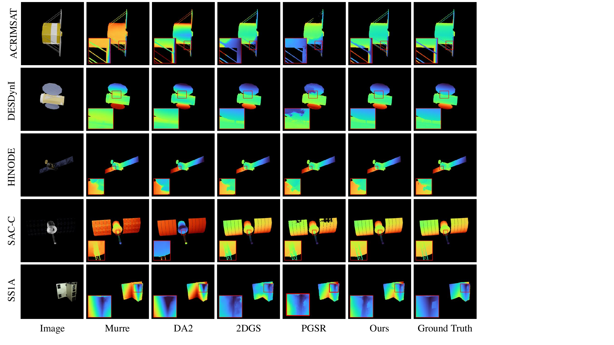
Surface reconstruction
Qualitative comparison
Structured initialization and selective depth constraints reduce floating points, duplicated surfaces, and local thickening.
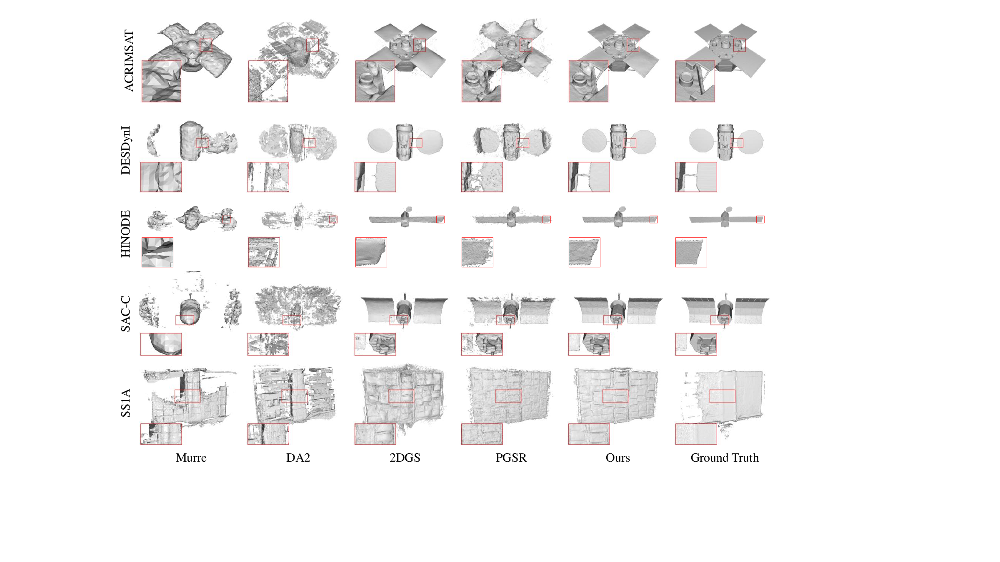
01
Interactive 3D Comparison
Compare Ground Truth with
ACRIMSAT
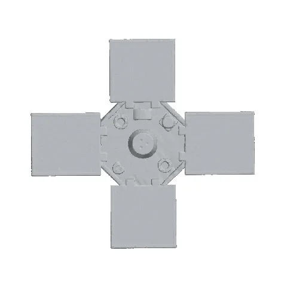
ACRIMSAT GT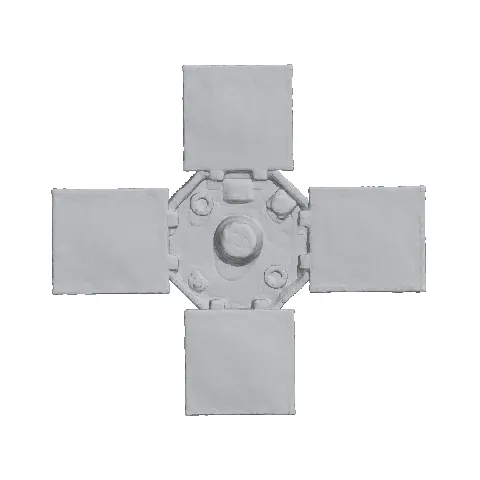
ACRIMSAT 1.5k↔
Ground TruthOurs · 1.5k
DESDynI
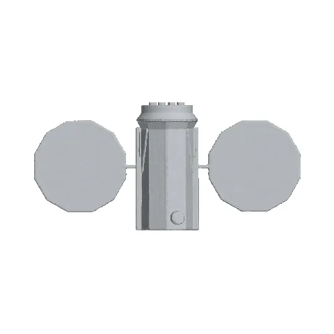
DESDynI GT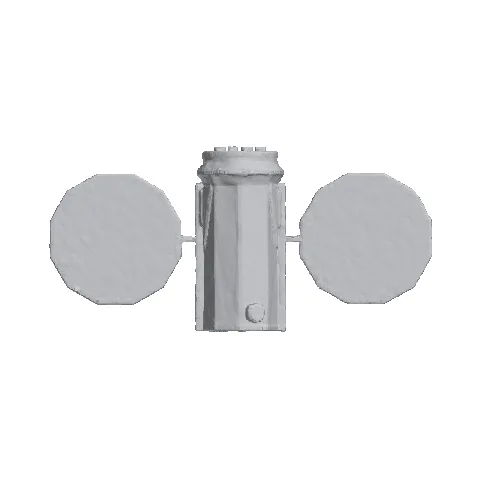
DESDynI 1.5k↔
Ground TruthOurs · 1.5k
HINODE
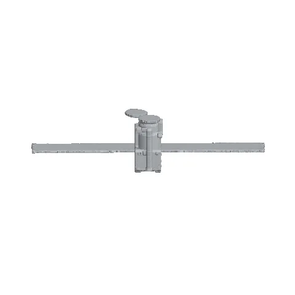
HINODE GT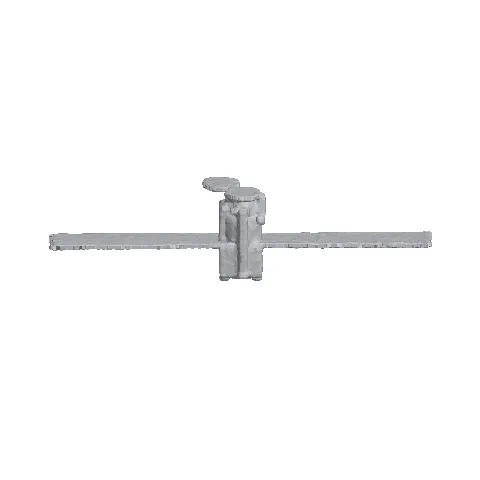
HINODE 1.5k↔
Ground TruthOurs · 1.5k
SAC-C
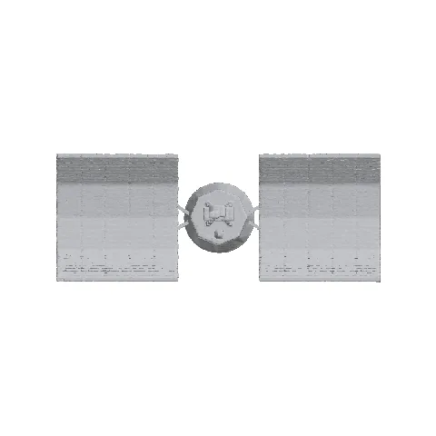
SAC-C GT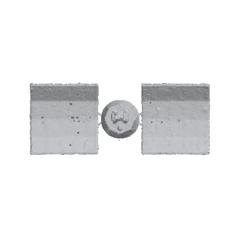
SAC-C 1.5k↔
Ground TruthOurs · 1.5k
05
BibTeX
@article{yanchuan2026spacecraft,
title = {Multi-View Geometry-Guided Self-Supervised Spacecraft Depth Refinement and Surface Reconstruction},
author = {Yanchuan et all},
year = {2026}
}